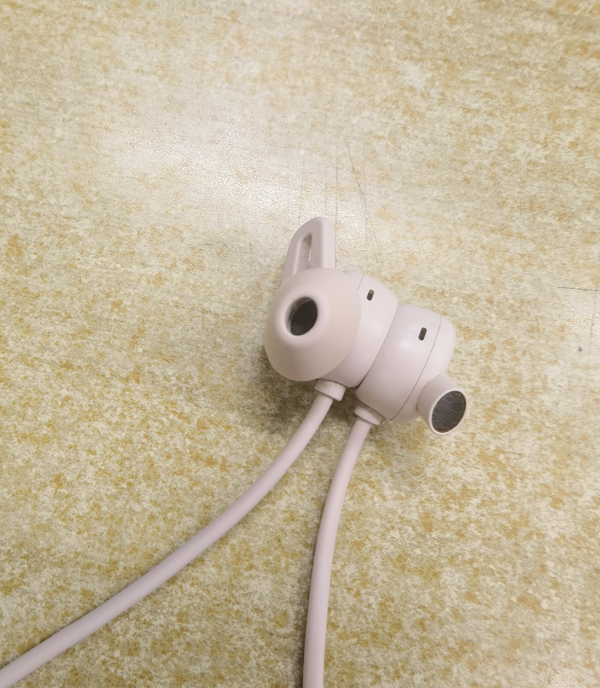
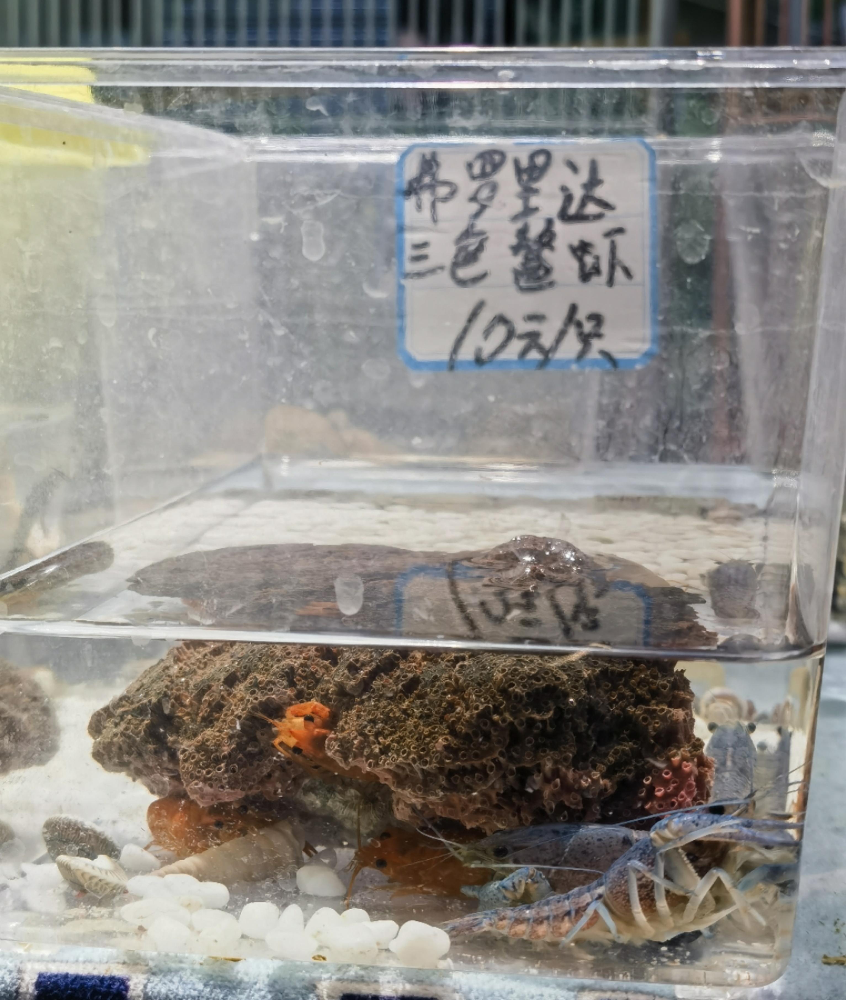
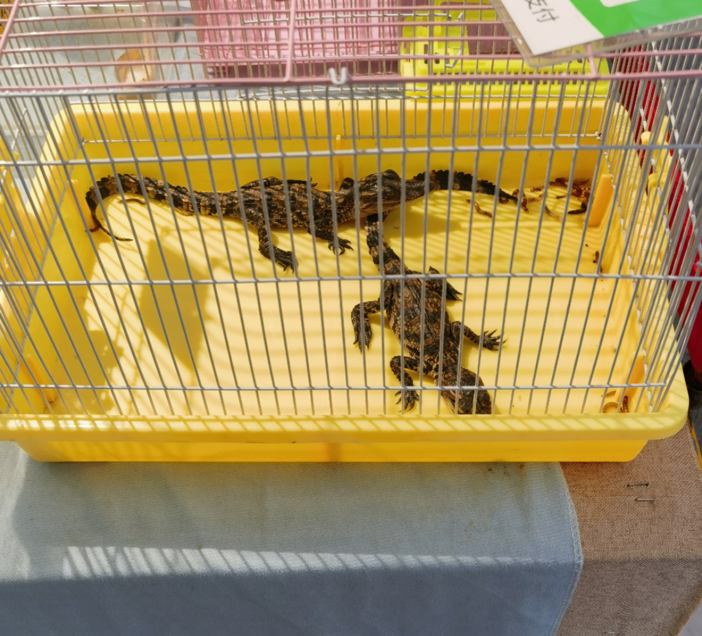

Exotic Pet
Today, I lost one side of the earphone’s cover, so I went to a offline store. To my disappointment, they didn’t do anything and just told me to search on Taobao. In the end, as expected, I found it on Taobao. Taobao is truly amazing!

After solving this, I came cross a marketplace selling many lovely and beautiful trinkets. But I was attracted by a stand which sells a lot of kinds of pets. Guess what I saw? Hermit crabs of different sizes, cynops orientalis, horned frog, mudskipper…and even tiny crocodile! To my surprise, the stall owner put some live mealworms in the cage of the two crocodiles and I counldn’t help wondering whether they enjoy worms or not. Compared to them, rabbits, cats and hamsters also sold by the stand seems quite ordinary. If it weren’t for the fact that dormitories are not suitable for and better do not allow pets, I would really want to bring home a cute hermit crab.


Nowadays, more and more people are willing to raise exotic pets. Moreover, the variety of animals that can be kept as pets is increasingly diverse, even beyond imagination, and they may come from all over the world. My family used to have a lovely bearded dragon and It have a soft belly❤️. I miss him very much.
It is pleasing to find that stores and facilities catering to these unconventional pets are gradually improving. Hopefully, some day we can see people walking their adorable pets on the streets, not just limited to cats and dogs, which is very interesting.